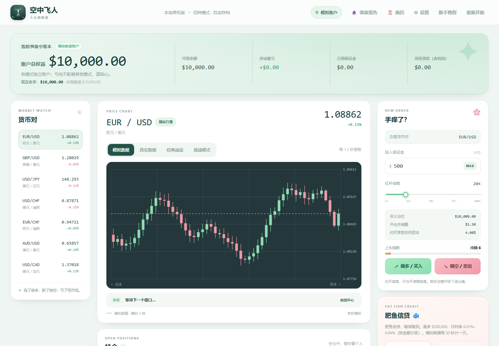

空中飞人
Air Trapeze — a dark-comedy forex trading game about refusing to leave the table. One link and you are in.

What it is
You get a simulated account, a market that keeps moving, and a position that starts bleeding the moment you look away. It is not a tutorial and it will not teach you to make money — it keeps a record of how you lose it, and asks whether you want to go again.
- Four modes — a coach mode for the first trade, then standard, hard, and contract runs with their own endings.
- Fourteen crisis files — the crashes worth reading between trades.
- Simulated and real prices — a synthetic market, or a year of actual EUR/USD history.
- Saved on your device — progress lives in the browser; nothing is uploaded.
Vanilla HTML, CSS and JavaScript: no framework, no build step, no server.